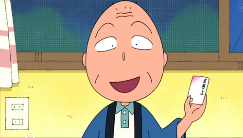

樱友藏
樱友藏，男，1898年10月3日出生，动漫作品人物，《樱桃小丸子》中小丸子的爷爷。有时候很糊涂，有时会和小丸子做一些幼稚的事。对丸子非常疼爱。
小丸子的爷爷，溺爱小丸子，对她事事认同，什么事都站在小丸子一边。小丸子想要什么，都竭尽所能去买，所以常被小丸子利用。最崇拜的人是花轮家的管家秀爷（ 在小丸子第二期中天综合台版27集向秀爷探病记中提到）有点老人痴呆（记性不好），但有时又会为想一件事想很久，口袋里戴上写着地址的卡片。经常与奶奶参加老人活动，并买些奇怪的手信回家。
